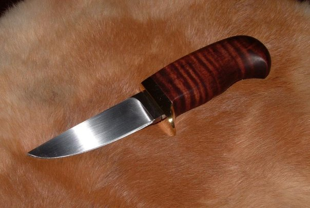
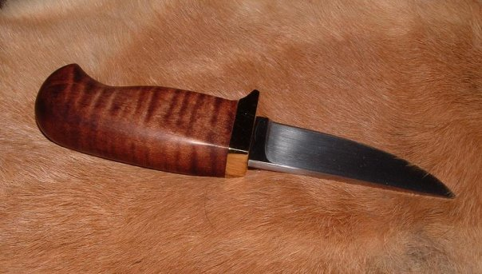
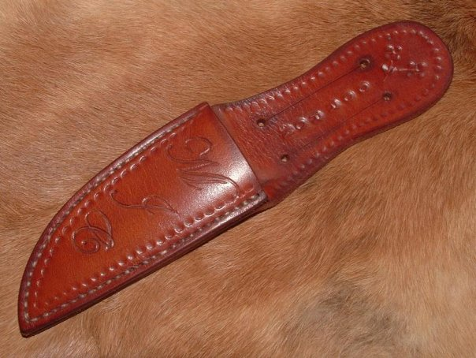
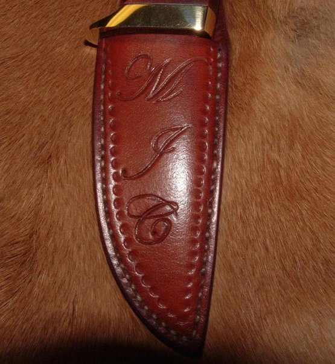

Hunting Knife Hunting Knife
Hunting Knife Hunting KnifeWhen my cousin announced the imminent birth of his last daughter, the family showered him and his wife with baby gifts. Having rather more time and talent than money, I decided to make a gift. Both parents being hunters, I thought a "baby's first hunting knife" would be appropriate.
The blade of this knife is made from a file too dull to be used for its intended purpose. Files are often made from uncomplicated carbon steel alloys such as W-1 and make perfect knife blades when the temper is slightly drawn. I did no forge-shaping on the blade, only stock-removal via the belt grinder.
The overall length of the knife is approximately six inches - enough for an adult to wrap, perhaps, three fingers around the handle. The handle is stained curly maple finished with a linseed oil based varnish. I fashioned the guard from scratch out of brass barstock.
In addition to the knife being the finest I have made to date, the sheath is also some of my best leatherwork. I used numerous varied techniques to "tool" the leather, and stained it with the same homemade mixture described elsewhere on this website.
The knife fits snugly in the sheath; both are perfectly funtional, though perhaps not overly practical. The sheath style is based upon those often found with German-made bowies and hunting knives, and could, technically be worn on a belt, but it would have to be a rather diminutive one.
Created by Sean Corron, April 2, 2011.